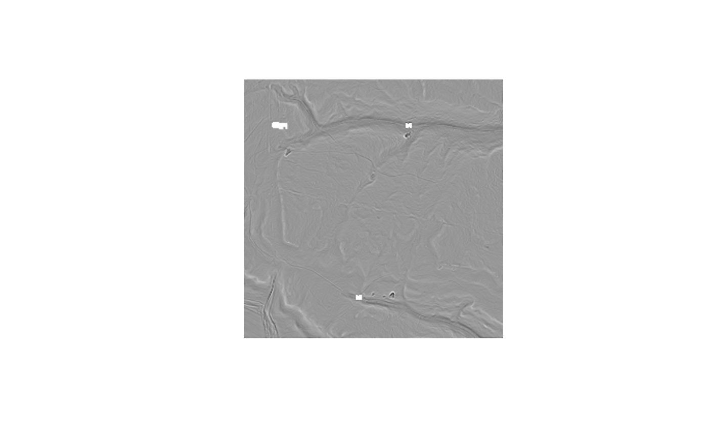

Nearly every metric in this package answers a different question at a
different resolution: on a 0.25 m DTM rvt_curvature() picks out cart ruts
and tree-throw pits, on a 2 m version of the same ground it picks out
terrace edges and gully walls. This coarsens a raster so you can ask at the
scale you actually mean.
Usage
rvt_resample(
src,
res,
method = "cubic",
out_path = fs::file_temp(ext = "tif"),
threads = rvt_threads(),
overwrite = FALSE
)Arguments
- src
path to a raster - a DEM, or any single- or multi-band result from this package. Several paths are mosaicked first, as elsewhere.
- res
target cell size in the raster's own map units (usually metres), either one number for square cells or two for
c(x, y)- method
resampling algorithm:
"cubic"(default, continuous data),"mode"(categorical), or any other algorithmgdal_translate -raccepts. See Choosing a method.- out_path
where to write the result (default: a temporary file)
- threads
threads for the output compression
- overwrite
overwrite
out_pathif it already exists
Details
It only ever goes coarser. Detail that was never measured cannot be invented, so asking for a finer resolution than the source is an error rather than a silently smooth upsampling.
How it works
A wrapper around GDAL's gdal_translate -tr (via
gdalraster::translate()) that writes a real Cloud-Optimized GeoTIFF
rather than a lazy VRT reference. Writing the file is the point:
The values get frozen once. GDAL's
averageresampling at a non-integer scale factor gives different elevations depending on how the raster is read - reading the bundled tile at 2.5 m in one go versus in 137-pixel windows disagrees by up to 0.53 m. Since every metric here walks its input in tiles, a lazy reference would make results depend ontile_size, which is the one thing this package guarantees never happens.Reads afterwards are about 10x faster than re-resampling on every read, and you will normally run several metrics on the same coarsened DEM.
Overviews on the source are explicitly ignored (-ovr NONE). GDAL would
otherwise quietly satisfy a coarsening request from whatever overviews the
file happens to carry, which silently overrides method - asking for
"mode" on a raster with averaged overviews returns averages, not classes.
Choosing a method
"cubic" (the default) suits continuous surfaces - elevation, and any of
the continuous products here. It keeps the shape of the terrain better than
a plain block average, and it is NoData-safe: a cell whose neighbourhood
is incomplete becomes NoData rather than being blended with the fill value.
The price is that holes grow a little - on the bundled tile, coarsening 1 m
to 4 m leaves 141 NoData cells against "average"'s 9.
"mode" (majority) is the one to use for categorical rasters - the
class codes from rvt_geomorphons(). Each coarse cell takes the commonest
class beneath it, so the result still contains only whole class codes.
"near" also preserves codes but picks one arbitrary cell per block rather
than the commonest, so prefer "mode" unless you specifically want
subsampling.
Avoid "average" on anything this package wrote. GDAL's average does
not exclude the NoData value from the mean, and every output here uses
-9999 - so cells beside a hole come out around -9000 instead of NoData.
It is safe only on rasters whose NoData is NaN (which the bundled DEM
happens to use). A warning is issued if you ask for it on a raster with a
numeric NoData value.
"max" is what the multi-resolution horizon search (rvt_reach) builds its
coarse levels with, because it is the only choice that keeps a distant
skyline intact: averaging flattens a narrow obstruction and nearest
neighbour can miss it altogether.
Any other algorithm GDAL accepts is passed through ("bilinear",
"lanczos", "min", "med", "rms", "q1", "q3", "sum", ...) if you
know you want it. Note "max", "min", "med", "q1", "q3" and
"sum" are done with gdalwarp rather than gdal_translate, which cannot
perform them, and so need the raster to carry a coordinate reference
system.
Which scale knob to reach for
Resolution is only half of scale - the other half is how far each metric looks, and the two are not interchangeable. Coarsening removes the microrelief before the metric sees it; widening a search radius keeps the microrelief and measures over more ground.
rvt_slope()andrvt_aspect()work off a fixed 3x3 window and have no radius to widen - resampling is their only scale control.rvt_curvature()andrvt_log()have a scale parameter (radiusandsigma), but unlike the box-filter family below, cost grows with it, so coarsening is still worth considering for a large one.rvt_slrm(),rvt_msrm(),rvt_dev()andrvt_mstp()cost the same per pixel whatever their radius, so widening the radius is free and keeps more information. Reach for that first.rvt_svf(),rvt_openness(),rvt_sky_illumination()andrvt_shadow()cost roughly cells x radius, so coarsening pays twice over: fewer cells and shorter rays for the same reach in metres. Measured on a 4000x4000 0.25 m tile, sky-view factor over a 10 m reach takes 15.8 s; on the 1 m version of the same ground, 0.6 s. That is often the difference between practical and not on a large survey.
Every distance in this package is in map units, so coarsening does not
silently change what a parameter means: rvt_svf(dem, reach = 10) looks
10 m out whatever the resolution. What changes is how finely that 10 m is
sampled - which is the point of coarsening.
See also
rvt_mosaic(), which joins tiles without changing resolution.
Examples
dem <- system.file("extdata", "dtm1.tif", package = "rvtr")
# ask a landscape-scale question of a 1 m DEM
dem |> rvt_resample(4) |> rvt_curvature() |> rvt_plot()
